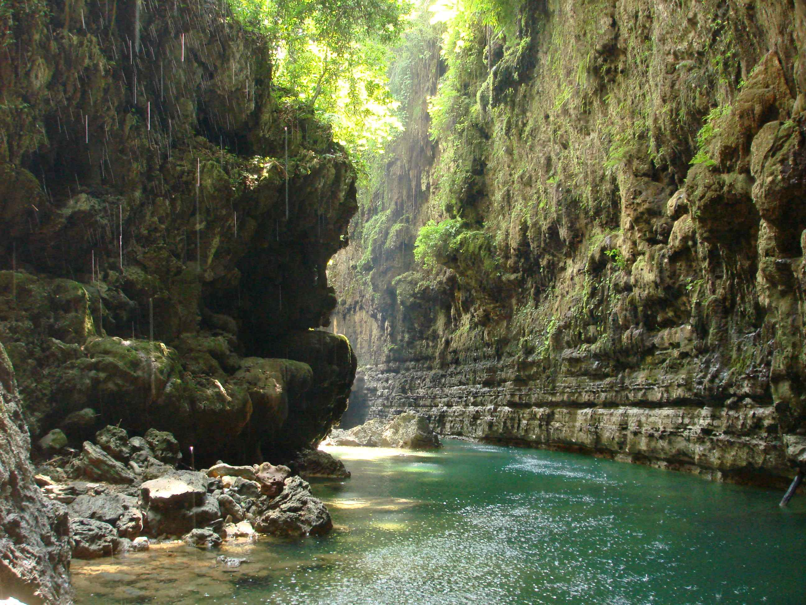

Detail Tempat Wisata
Green Canyon
 Green Canyon merupakan wisata alam berupa aliran sungai yang diapit oleh dua buah bukit bebatuan yang menembus gua. Pada mulut goa dihiasi gemercik tetesan air yang menyerupai hujan abadi yang memberikan kesan kesempurnaan akan keindahan alam. Destinasi wisata yang terletak di Desa Kertayasa, Kecamatan Cijulang, Kabupaten Pangandaran ini memiliki beberapa titik atraksi wisata diantaranya Gua Cukang Taneuh, Batu Tengah, Batu Payung dan Pemandian Putri. Green Canyon menawarkan aktivitas wisata mulai dari berperahu untuk wisatawan yang hanya ingin sekedar menikmati pemandangan alam, berenang, body rafting, terjun ke dalam air dan menjelajahi tebing bagi wisatawan yang menyukai tantangan yang memacu adrenalin.
Alamat Tempat Wisata Green Canyon
| Nama Tempat Wisata | Alamat |
| Green Canyon | Pangandaran , Jawa Barat |